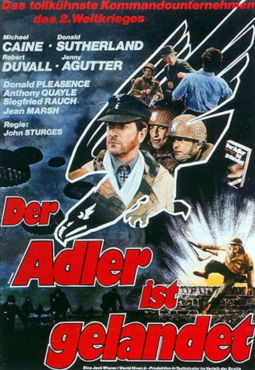
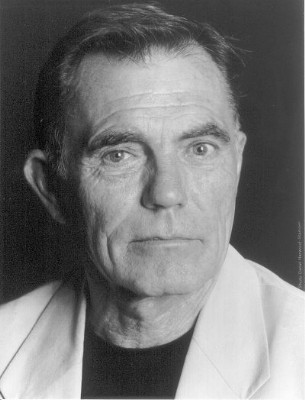

#3015 Der Adler ist gelandet
Alternativ: The Eagle Has Landed
 
 IMDB-Wertung: 6.9 / 10
IMDB-Wertung: 6.9 / 10  Metascore: 0
Metascore: 0 
Britischer Kriegsfilm von John Sturges nach einem Roman von Jack Higgins, der während des Zweiten Weltkriegs angesiedelt ist: nach der verlorenen Schlacht von Stalingrad rücken die Alliierten immer weiter vor und Hitler bekommt die Idee, Churchill zu entführen um so ein Druckmittel zu haben. Dei Spione landen im SüdenEnglands und versuchen an Informationen zu kommen.
Jahr: 1976
Dauer: 135 Minuten
FSK: 16
Land: England Studio: Scotia International FilmverleihTonspuren:
Untertitel: Deutsch,
Auflösung: 720p (1280x544) Größe: 4689 MB
Genre: Thriller, Drama, Abenteuer, Krieg
Regisseur: John Sturges
Drehbuch: Tom Mankiewicz, Jack Higgins
Soundtrack: Lalo Schifrin
Darsteller:
 Michael Caine als Colonel Steiner
Michael Caine als Colonel Steiner Donald Sutherland als Liam Devlin
Donald Sutherland als Liam Devlin Robert Duvall als Colonel Radl
Robert Duvall als Colonel Radl Jenny Agutter als Molly
Jenny Agutter als Molly Donald Pleasence als Himmler
Donald Pleasence als Himmler Anthony Quayle als Admiral Canaris
Anthony Quayle als Admiral Canaris Jean Marsh als Joanna Grey
Jean Marsh als Joanna Grey- Sven-Bertil Taube als Captain von Neustadt
 John Standing als Father Verecker
John Standing als Father Verecker Judy Geeson als Pamela
Judy Geeson als Pamela Treat Williams als Captain Clark
Treat Williams als Captain Clark Larry Hagman als Colonel Pitts
Larry Hagman als Colonel Pitts Michael Byrne als Karl
Michael Byrne als Karl- Joachim Hansen als SS-Obergruppenführer
-  Maurice Roëves als Maj. Corcoran
- Jeff Conaway als Frazier
- Rob Reece als
- Anthony Forrest als Sgt. Hayley , uncredited
 Adolf Hitler als Himself - Greets Mussolini After Rescue , archive footage, uncredited
Adolf Hitler als Himself - Greets Mussolini After Rescue , archive footage, uncredited Ferdy Mayne als Radl's Doctor , uncredited
Ferdy Mayne als Radl's Doctor , uncredited Malcolm Tierney als German Officer , uncredited
Malcolm Tierney als German Officer , uncredited- Alexei Jawdokimov als Corporal Kuniski
- Richard Wren als
- Denis Lill als
- Rick Parsé als
- Léonie Thelen als
- Keith Buckley als
 Terence Plummer als
Terence Plummer als - Tim Barlow als George Wilde, Publican
- John Barrett als Laker Armsby
- Kate Binchy als
- David Gilliam als
- Asa Teeter als
- Jack McCulloch als
- Siegfried Rauch als Sgt. Brandt
- Leigh Dilley als Winston Churchill / George Fowler , uncredited
 Harry Fielder als Motorbike Outrider , uncredited
Harry Fielder als Motorbike Outrider , uncredited- Paul Finemore als Dead Diver , uncredited
 Wolf Kahler als Hauptsturmführer Fleischer , uncredited
Wolf Kahler als Hauptsturmführer Fleischer , uncredited George Leech als Traumer , uncredited
George Leech als Traumer , uncredited- Roy Marsden als Stormbandführer Toberg, SS , uncredited
- Peter Miles als Adolf Hitler , uncredited
- Benito Mussolini als Himself - Rescued by Skorzeny , archive footage, uncredited
- Otto Skorzeny als Himself - Rescues Mussolini, Wears Binoculars , archive footage, uncredited
- Joachim von Ribbentrop als Himself - Greets Mussolini and Hitler, Wears White Lapels , archive footage, uncredited
 Kent Williams als Mallory , uncredited
Kent Williams als Mallory , uncredited
Datei: X:\1976\Adler ist gelandet, Der (1976, FSK16, 1280x544).mkv seit 19.01.2016
Festplatte: HD 1971-1979
 Es gibt insgesamt 31 Filme in der Gruppe '1976'
Es gibt insgesamt 31 Filme in der Gruppe '1976'